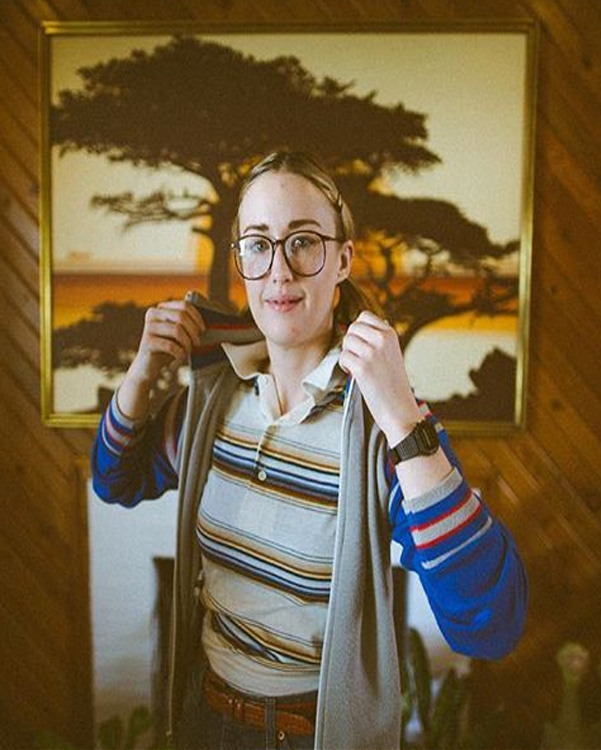
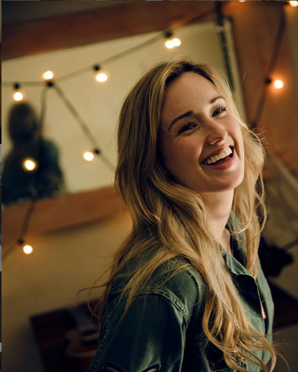

Personal Life



Ashley Suzanne Johnson, is an american actress who is currently 35 years old. She is currently engaged to Brian Wayne Foster.
Started her career at a very young age and has continued to work as a film, television and voice actor. Her various television roles include Growing Pains, Dollhouse, Dirt, The Killing and Drunk History, as well as the films, What Women Want, Fast Food Nation, Avengers, Joss Whedon’s Much Ado About Nothing and The Help. She’s worked on many animation series, including Recess, King of the Hill, Gwen on Ben 10 Alien Force, Terra on Teen Titans and Renet on Teenage Mutant Ninja Turtles. As of 2015, she plays FBI forensic specialist Patterson in the NBC drama series Blindspot
As for her video game roles, you can hear her as Petra in Minecraft: Storymode, Gerti in Tales from the Borderlands, The Witness, LEGO Marvel’s Avengers and Ellie in, The Last Of Us. She co-starred in the PlayStation exclusive The Last of Us as the character Ellie, which was released to critical acclaim and commercial success. She subsequently won a video game BAFTA for Best Performer and a VGX Award for Best Voice Actress for her role in the game. On March 12, 2015, Johnson won another BAFTA for Best Performer for the same role in the game's downloadable content, The Last of Us: Left Behind. She will reprise the role in The Last of Us Part II.
You can find her every Thursday on Critical Role, where a group of nerdy-ass voice actors play D&D for an audience of millions. You can catch her exploits with Vox Machina as the Gnome Cleric, Pike Trickfoot – or with the Mighty Nein as Yasha Nydoorin, a Fallen Aasimar Barbarian.